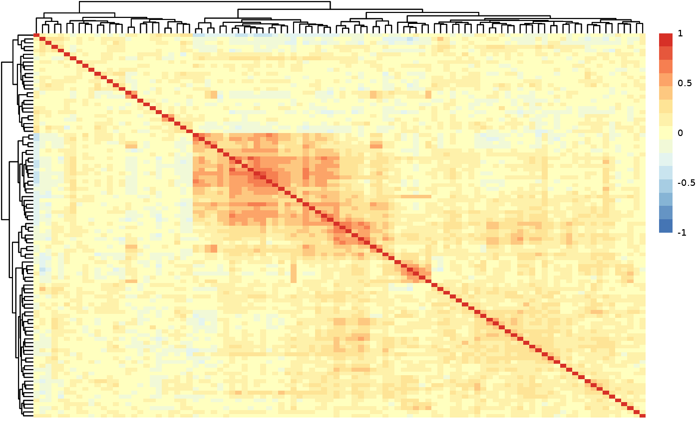
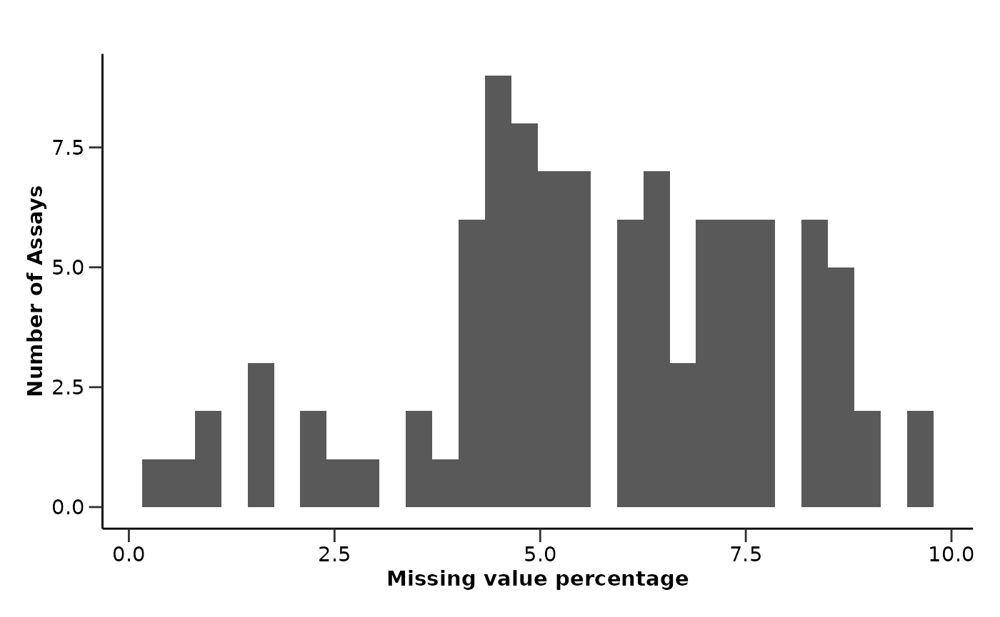
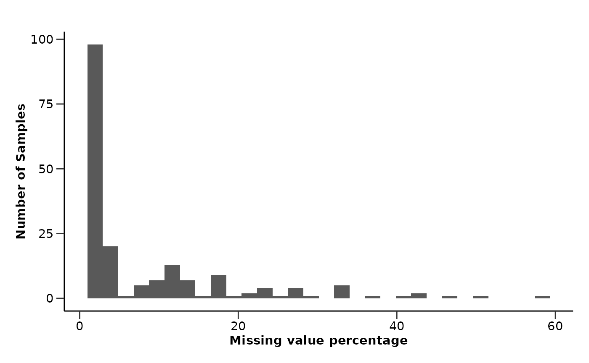
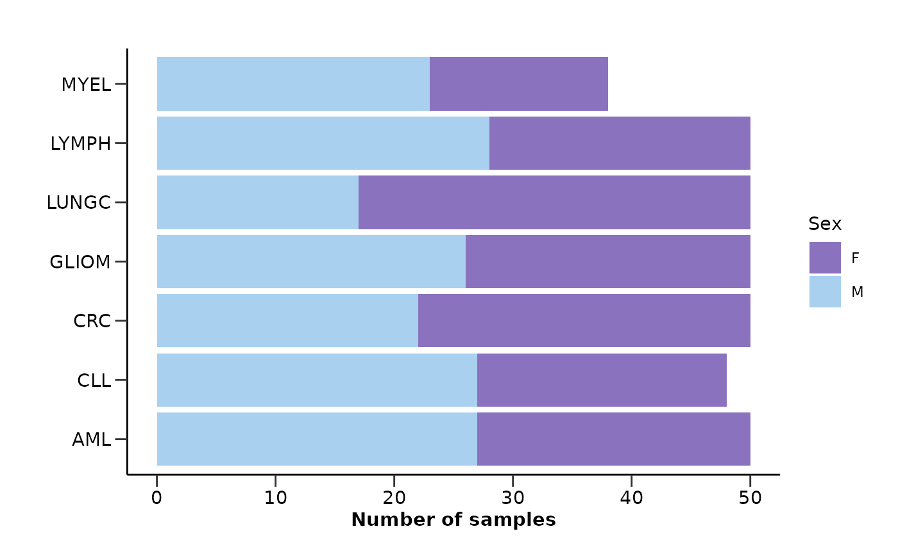
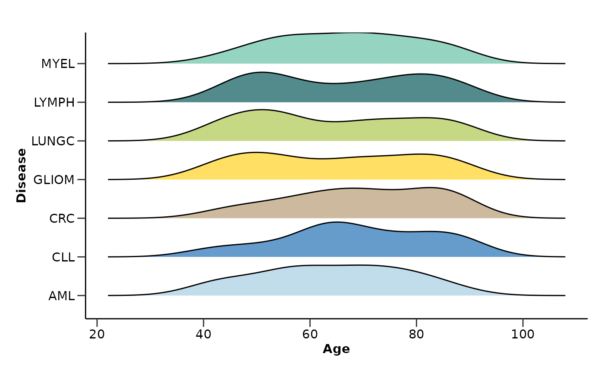
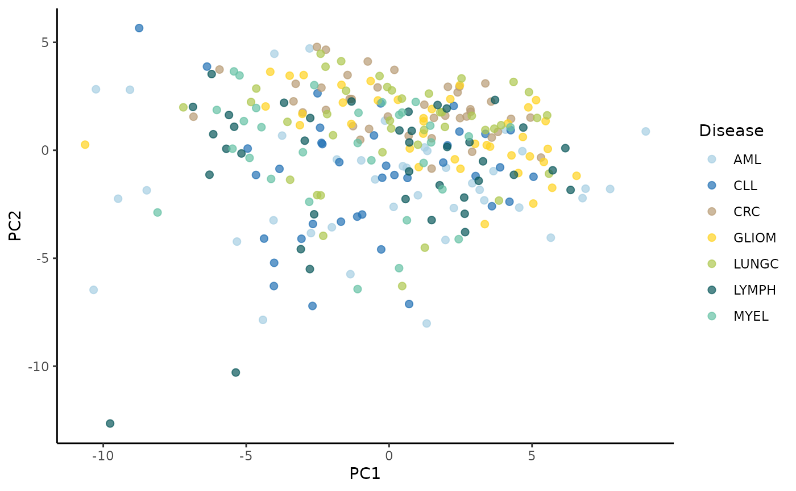
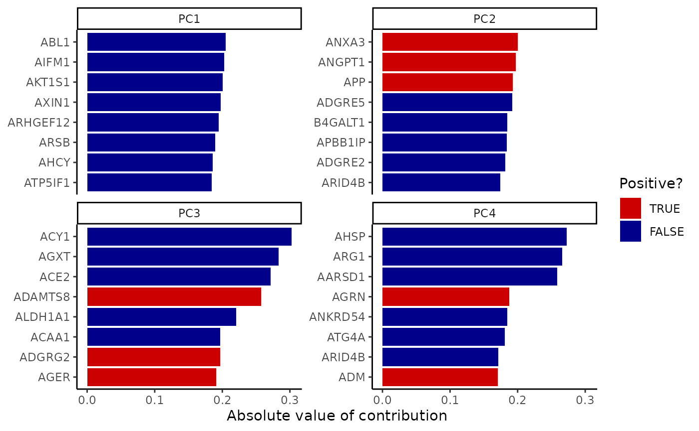
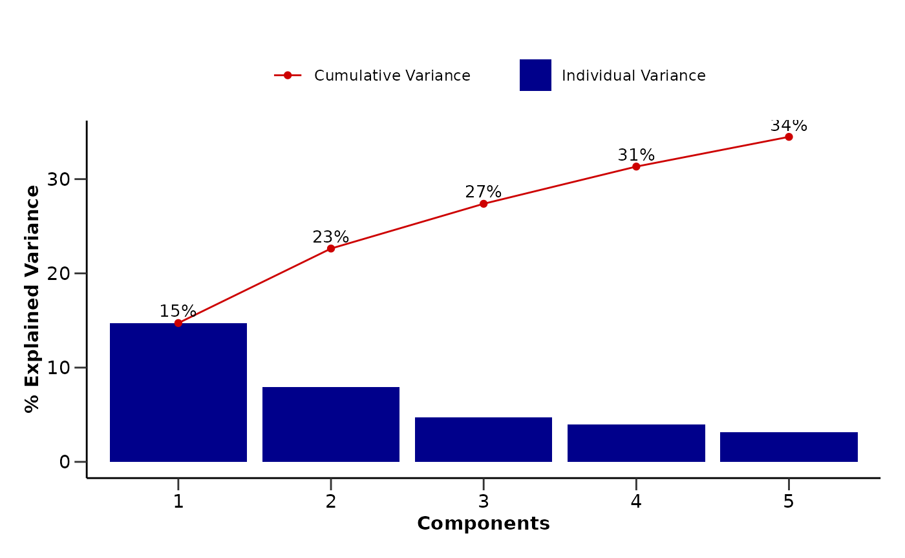
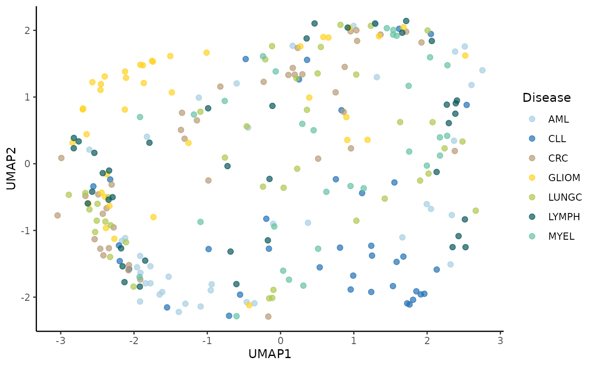
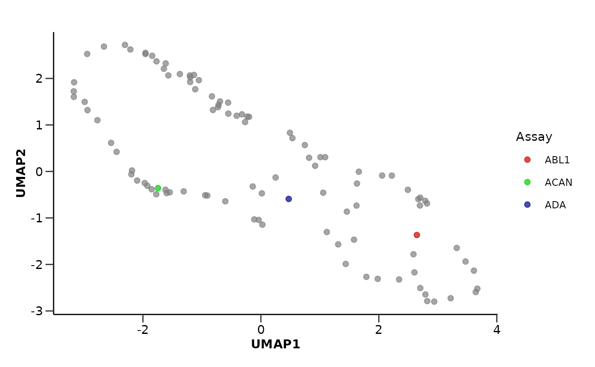

Data Preprocessing & Quality Control Check
Source:vignettes/data_preprocessing.Rmd
data_preprocessing.RmdThis vignette will guide you through the initial steps of data preprocessing. Except from HDAnalyzeR We will import dplyr in order to perform some basic data manipulation.
library(HDAnalyzeR)
library(dplyr)
#>
#> Attaching package: 'dplyr'
#> The following objects are masked from 'package:stats':
#>
#> filter, lag
#> The following objects are masked from 'package:base':
#>
#> intersect, setdiff, setequal, union📓 This vignette is just a basic example of how to preprocess the data. Every dataset is different and may require different preprocessing steps. Please make sure to check the data and metadata before proceeding with the analysis. Remember that in order to run the package without issues, make sure that your data include the following columns: DAid, Assay and NPX, while your metadata include the following columns: DAid and Disease. Also, if you have a Sex column in your metadata, the data should be encoded as M and F.
Let’s start with loading the example data and metadata that come with the package.
example_data
#> # A tibble: 56,142 × 10
#> DAid Sample OlinkID UniProt Assay Panel NPX Assay_Warning QC_Warning
#> <chr> <chr> <chr> <chr> <chr> <chr> <dbl> <chr> <chr>
#> 1 DA00001 AML_syn… OID213… Q9BTE6 AARS… Onco… 3.39 PASS PASS
#> 2 DA00001 AML_syn… OID212… P00519 ABL1 Onco… 2.76 PASS PASS
#> 3 DA00001 AML_syn… OID212… P09110 ACAA1 Onco… 1.71 PASS PASS
#> 4 DA00001 AML_syn… OID201… P16112 ACAN Card… 0.0333 PASS PASS
#> 5 DA00001 AML_syn… OID201… Q9BYF1 ACE2 Card… 1.76 PASS PASS
#> 6 DA00001 AML_syn… OID201… Q15067 ACOX1 Card… -0.919 PASS PASS
#> 7 DA00001 AML_syn… OID203… P13686 ACP5 Card… 1.54 PASS PASS
#> 8 DA00001 AML_syn… OID214… Q9NPH0 ACP6 Onco… 2.15 PASS PASS
#> 9 DA00001 AML_syn… OID200… P62736 ACTA2 Card… 2.81 PASS PASS
#> 10 DA00001 AML_syn… OID204… O43707 ACTN4 Infl… 0.742 PASS PASS
#> # ℹ 56,132 more rows
#> # ℹ 1 more variable: PlateID <chr>
example_metadata
#> # A tibble: 586 × 9
#> DAid Sample Disease Stage Grade Sex Age BMI Cohort
#> <chr> <chr> <chr> <chr> <chr> <chr> <dbl> <dbl> <chr>
#> 1 DA00001 AML_syn_1 AML 2 NA F 42 22.7 UCAN
#> 2 DA00002 AML_syn_2 AML Unknown NA M 69 33.1 UCAN
#> 3 DA00003 AML_syn_3 AML 2 NA F 61 26.2 UCAN
#> 4 DA00004 AML_syn_4 AML Unknown NA M 54 28.1 UCAN
#> 5 DA00005 AML_syn_5 AML 2 NA F 57 21.4 UCAN
#> 6 DA00006 AML_syn_6 AML Unknown NA M 86 33.9 UCAN
#> 7 DA00007 AML_syn_7 AML 1 NA F 85 28.7 UCAN
#> 8 DA00008 AML_syn_8 AML 3 NA F 88 32.6 UCAN
#> 9 DA00009 AML_syn_9 AML Unknown NA M 80 26.1 UCAN
#> 10 DA00010 AML_syn_10 AML 3 NA M 48 33.8 UCAN
#> # ℹ 576 more rowsWe will check the structure of the data, as well as the unique values
of the columns Assay_Warning and PlateID.
str(example_data)
#> tibble [56,142 × 10] (S3: tbl_df/tbl/data.frame)
#> $ DAid : chr [1:56142] "DA00001" "DA00001" "DA00001" "DA00001" ...
#> $ Sample : chr [1:56142] "AML_syn_1" "AML_syn_1" "AML_syn_1" "AML_syn_1" ...
#> $ OlinkID : chr [1:56142] "OID21311" "OID21280" "OID21269" "OID20159" ...
#> $ UniProt : chr [1:56142] "Q9BTE6" "P00519" "P09110" "P16112" ...
#> $ Assay : chr [1:56142] "AARSD1" "ABL1" "ACAA1" "ACAN" ...
#> $ Panel : chr [1:56142] "Oncology" "Oncology" "Oncology" "Cardiometabolic" ...
#> $ NPX : num [1:56142] 3.3903 2.7589 1.707 0.0333 1.7554 ...
#> $ Assay_Warning: chr [1:56142] "PASS" "PASS" "PASS" "PASS" ...
#> $ QC_Warning : chr [1:56142] "PASS" "PASS" "PASS" "PASS" ...
#> $ PlateID : chr [1:56142] "Run001" "Run001" "Run001" "Run001" ...
unique(example_data$Assay_Warning)
#> [1] "PASS" "WARN"
unique(example_data$PlateID)
#> [1] "Run001" "Run002" "Run003" "Run004" "Run005"We will count the number of warnings for each assay to see if there is a bias between the different assays.
example_data |>
filter(Assay_Warning == "WARN") |>
group_by(Assay) |>
summarize(nWarnings = n()) |>
arrange(nWarnings) |>
tail()
#> # A tibble: 6 × 2
#> Assay nWarnings
#> <chr> <int>
#> 1 ANGPTL7 9
#> 2 ATP5PO 9
#> 3 ACAA1 10
#> 4 ACE2 10
#> 5 ADGRE5 10
#> 6 AKT3 11As we see there is not a bias between the different assays. We will
now clean the data by keeping only the columns DAid,
Assay, NPX, and PlateID, and
filtering out the assays with warnings and the Run004
plate.
long_data <- clean_data(example_data,
keep_cols = c("DAid", "Assay", "NPX", "PlateID"),
filter_assay_warning = TRUE,
filter_plates = "Run004")
long_data
#> # A tibble: 44,372 × 4
#> DAid Assay NPX PlateID
#> <chr> <chr> <dbl> <chr>
#> 1 DA00001 AARSD1 3.39 Run001
#> 2 DA00001 ABL1 2.76 Run001
#> 3 DA00001 ACAA1 1.71 Run001
#> 4 DA00001 ACAN 0.0333 Run001
#> 5 DA00001 ACE2 1.76 Run001
#> 6 DA00001 ACOX1 -0.919 Run001
#> 7 DA00001 ACP5 1.54 Run001
#> 8 DA00001 ACP6 2.15 Run001
#> 9 DA00001 ACTA2 2.81 Run001
#> 10 DA00001 ACTN4 0.742 Run001
#> # ℹ 44,362 more rowsWe will do the same for the metadata, keeping only the columns
DAid, Disease, Sex, and
Age, and keeping only the UCAN cohort.
str(example_metadata)
#> tibble [586 × 9] (S3: tbl_df/tbl/data.frame)
#> $ DAid : chr [1:586] "DA00001" "DA00002" "DA00003" "DA00004" ...
#> $ Sample : chr [1:586] "AML_syn_1" "AML_syn_2" "AML_syn_3" "AML_syn_4" ...
#> $ Disease: chr [1:586] "AML" "AML" "AML" "AML" ...
#> $ Stage : chr [1:586] "2" "Unknown" "2" "Unknown" ...
#> $ Grade : chr [1:586] NA NA NA NA ...
#> $ Sex : chr [1:586] "F" "M" "F" "M" ...
#> $ Age : num [1:586] 42 69 61 54 57 86 85 88 80 48 ...
#> $ BMI : num [1:586] 22.7 33.1 26.2 28.1 21.4 33.9 28.7 32.6 26.1 33.8 ...
#> $ Cohort : chr [1:586] "UCAN" "UCAN" "UCAN" "UCAN" ...
unique(example_metadata$Cohort)
#> [1] "UCAN" "Gender_specific"
metadata <- clean_metadata(example_metadata, c("DAid", "Disease", "Sex", "Age"), cohort = "UCAN")
metadata
#> # A tibble: 336 × 4
#> DAid Disease Sex Age
#> <chr> <chr> <chr> <dbl>
#> 1 DA00001 AML F 42
#> 2 DA00002 AML M 69
#> 3 DA00003 AML F 61
#> 4 DA00004 AML M 54
#> 5 DA00005 AML F 57
#> 6 DA00006 AML M 86
#> 7 DA00007 AML F 85
#> 8 DA00008 AML F 88
#> 9 DA00009 AML M 80
#> 10 DA00010 AML M 48
#> # ℹ 326 more rows💡 Don’t forget to match your data with the metadata!
long_data <- metadata |>
inner_join(long_data, by = "DAid") |>
select(-any_of(c("Disease", "Sex", "Age")))We will generate the wide data and the join data. The wide data will
have assays as names, NPX as values and the rows will be the samples
with a unique DAid. The join data will be the wide data with the extra
metadata columns DAid, Disease,
Sex, and Age.
dfs <- generate_df(long_data,
metadata,
metadata_cols = c("DAid", "Disease", "Sex", "Age"),
save = FALSE)
wide_data <- dfs$wide_data
join_data <- dfs$join_data
wide_data
#> # A tibble: 268 × 101
#> DAid AARSD1 ABL1 ACAA1 ACAN ACE2 ACOX1 ACP5 ACP6 ACTA2
#> <chr> <dbl> <dbl> <dbl> <dbl> <dbl> <dbl> <dbl> <dbl> <dbl>
#> 1 DA00001 3.39 2.76 1.71 0.0333 1.76 -0.919 1.54 2.15 2.81
#> 2 DA00002 1.42 1.25 NA -0.459 0.826 -0.902 0.647 1.30 0.798
#> 3 DA00003 NA NA NA 0.989 NA 0.330 1.37 NA NA
#> 4 DA00004 3.41 3.38 1.69 NA 1.52 NA 0.841 0.582 1.70
#> 5 DA00005 5.01 5.05 0.128 0.401 -0.933 -0.584 0.0265 1.16 2.73
#> 6 DA00006 6.83 1.18 -1.74 -0.156 1.53 -0.721 0.620 0.527 0.772
#> 7 DA00007 NA NA 3.96 0.682 3.14 2.62 1.47 2.25 2.01
#> 8 DA00008 2.78 0.812 -0.552 0.982 -0.101 -0.304 0.376 -0.826 1.52
#> 9 DA00009 4.39 3.34 -0.452 -0.868 0.395 1.71 1.49 -0.0285 0.200
#> 10 DA00010 1.83 1.21 -0.912 -1.04 -0.0918 -0.304 1.69 0.0920 2.04
#> # ℹ 258 more rows
#> # ℹ 91 more variables: ACTN4 <dbl>, ACY1 <dbl>, ADA <dbl>, ADA2 <dbl>,
#> # ADAM15 <dbl>, ADAM23 <dbl>, ADAMTS13 <dbl>, ADAMTS15 <dbl>, ADAMTS16 <dbl>,
#> # ADAMTS8 <dbl>, ADCYAP1R1 <dbl>, ADGRE2 <dbl>, ADGRE5 <dbl>, ADGRG1 <dbl>,
#> # ADGRG2 <dbl>, ADH4 <dbl>, AGER <dbl>, AGR2 <dbl>, AGR3 <dbl>, AGRN <dbl>,
#> # AGRP <dbl>, AGXT <dbl>, AHCY <dbl>, AHSP <dbl>, AIF1 <dbl>, AIFM1 <dbl>,
#> # AK1 <dbl>, AKR1B1 <dbl>, AKR1C4 <dbl>, AKT1S1 <dbl>, AKT3 <dbl>, …
join_data
#> # A tibble: 268 × 104
#> DAid Disease Sex Age AARSD1 ABL1 ACAA1 ACAN ACE2 ACOX1 ACP5
#> <chr> <chr> <chr> <dbl> <dbl> <dbl> <dbl> <dbl> <dbl> <dbl> <dbl>
#> 1 DA000… AML F 42 3.39 2.76 1.71 0.0333 1.76 -0.919 1.54
#> 2 DA000… AML M 69 1.42 1.25 NA -0.459 0.826 -0.902 0.647
#> 3 DA000… AML F 61 NA NA NA 0.989 NA 0.330 1.37
#> 4 DA000… AML M 54 3.41 3.38 1.69 NA 1.52 NA 0.841
#> 5 DA000… AML F 57 5.01 5.05 0.128 0.401 -0.933 -0.584 0.0265
#> 6 DA000… AML M 86 6.83 1.18 -1.74 -0.156 1.53 -0.721 0.620
#> 7 DA000… AML F 85 NA NA 3.96 0.682 3.14 2.62 1.47
#> 8 DA000… AML F 88 2.78 0.812 -0.552 0.982 -0.101 -0.304 0.376
#> 9 DA000… AML M 80 4.39 3.34 -0.452 -0.868 0.395 1.71 1.49
#> 10 DA000… AML M 48 1.83 1.21 -0.912 -1.04 -0.0918 -0.304 1.69
#> # ℹ 258 more rows
#> # ℹ 93 more variables: ACP6 <dbl>, ACTA2 <dbl>, ACTN4 <dbl>, ACY1 <dbl>,
#> # ADA <dbl>, ADA2 <dbl>, ADAM15 <dbl>, ADAM23 <dbl>, ADAMTS13 <dbl>,
#> # ADAMTS15 <dbl>, ADAMTS16 <dbl>, ADAMTS8 <dbl>, ADCYAP1R1 <dbl>,
#> # ADGRE2 <dbl>, ADGRE5 <dbl>, ADGRG1 <dbl>, ADGRG2 <dbl>, ADH4 <dbl>,
#> # AGER <dbl>, AGR2 <dbl>, AGR3 <dbl>, AGRN <dbl>, AGRP <dbl>, AGXT <dbl>,
#> # AHCY <dbl>, AHSP <dbl>, AIF1 <dbl>, AIFM1 <dbl>, AK1 <dbl>, AKR1B1 <dbl>, …Now, we will perform a quality control check on the data.
qc_summary_data() will return the percentage of missing
values for each column and row and plot their distributions, the
protein-protein correlation and check if there are any highly correlated
proteins (above the threshold of 0.9), as well as the normality of the
different assays.
qc_data <- qc_summary_data(wide_data, threshold = 0.9, report = TRUE)
#> [1] "Summary:"
#> [1] "Note: In case of long output, only the first 10 rows are shown. To see the rest display the object with view()"
#> [1] "Number of samples: 268"
#> [1] "Number of variables: 100"
#> [1] "--------------------------------------"
#> [1] "character : 1"
#> [1] "numeric : 100"
#> [1] "--------------------------------------"
#> [1] "NA percentage in each column:"
#> # A tibble: 100 × 2
#> column na_percentage
#> <chr> <dbl>
#> 1 ACAA1 9.7
#> 2 AKT3 9.7
#> 3 AIF1 9
#> 4 ATP6AP2 9
#> 5 ADCYAP1R1 8.6
#> 6 AGR2 8.6
#> 7 AKR1B1 8.6
#> 8 ARHGAP25 8.6
#> 9 ATXN10 8.6
#> 10 ADAM15 8.2
#> # ℹ 90 more rows
#> [1] "--------------------------------------"
#> [1] "NA percentage in each row:"
#> # A tibble: 186 × 2
#> DAid na_percentage
#> <chr> <dbl>
#> 1 DA00450 57.4
#> 2 DA00003 51.5
#> 3 DA00463 47.5
#> 4 DA00116 43.6
#> 5 DA00475 42.6
#> 6 DA00443 41.6
#> 7 DA00476 37.6
#> 8 DA00394 33.7
#> 9 DA00408 33.7
#> 10 DA00461 33.7
#> # ℹ 176 more rows
#> [1] "--------------------------------------"
#> [1] "Normality test results:"
#> # A tibble: 100 × 4
#> Protein p_value adj.P.Val is_normal
#> <chr> <dbl> <dbl> <lgl>
#> 1 ATF2 6.58e-16 6.58e-14 FALSE
#> 2 ARID4B 4.20e-14 2.10e-12 FALSE
#> 3 AZU1 9.03e-12 3.01e-10 FALSE
#> 4 ARTN 2.58e-10 6.44e- 9 FALSE
#> 5 APBB1IP 3.80e-10 7.61e- 9 FALSE
#> 6 ADA 2.63e- 9 4.00e- 8 FALSE
#> 7 AREG 2.80e- 9 4.00e- 8 FALSE
#> 8 ALDH3A1 3.28e- 9 4.10e- 8 FALSE
#> 9 AGRN 2.14e- 8 2.28e- 7 FALSE
#> 10 AOC1 2.28e- 8 2.28e- 7 FALSE
#> # ℹ 90 more rows
#> [1] "--------------------------------------"
#> [1] "Protein-protein correlations above 0.9:"
#> [1] Protein1 Protein2 Correlation
#> <0 rows> (or 0-length row.names)
#> [1] "--------------------------------------"
#> [1] "Correlation heatmap:"
#> [1] "--------------------------------------"
qc_data$na_col_dist
#> `stat_bin()` using `bins = 30`. Pick better value with `binwidth`.
qc_data$na_row_dist
#> `stat_bin()` using `bins = 30`. Pick better value with `binwidth`.
From the QC results we can see that all assays have less than 10% missing values, while only a few samples have more than 20% missing values. The protein-protein correlation plot shows that there are no highly correlated proteins. The normality plot shows that most of the assays are not normally distributed, but this is expected for this artificial dataset. Based on these we can take decisions on filtering samples with high missing values or excluding assays from statistical analysis with normality assumptions.
Let’s do the same for the metadata, this time using the
qc_summary_metadata() function. This function will return
the percentage of missing values for each row and column and plot their
distributions, as well as the distributions of selected metadata columns
like Sex and Age.
qc_metadata <- qc_summary_metadata(metadata,
categorical = "Sex",
numerical = "Age",
disease_palette = "cancers12")
#> [1] "Summary:"
#> [1] "Note: In case of long output, only the first 10 rows are shown. To see the rest display the object with view()"
#> [1] "Number of samples: 336"
#> [1] "Number of variables: 3"
#> [1] "--------------------------------------"
#> [1] "character : 3"
#> [1] "numeric : 1"
#> [1] "--------------------------------------"
#> [1] "NA percentage in each column:"
#> # A tibble: 0 × 2
#> # ℹ 2 variables: column <chr>, na_percentage <dbl>
#> [1] "--------------------------------------"
#> [1] "NA percentage in each row:"
#> # A tibble: 0 × 2
#> # ℹ 2 variables: DAid <chr>, na_percentage <dbl>
#> [1] "--------------------------------------"
#> Sex contains:
#> # A tibble: 14 × 3
#> Disease Sex n
#> <chr> <chr> <int>
#> 1 AML F 23
#> 2 AML M 27
#> 3 CLL F 21
#> 4 CLL M 27
#> 5 CRC F 28
#> 6 CRC M 22
#> 7 GLIOM F 24
#> 8 GLIOM M 26
#> 9 LUNGC F 33
#> 10 LUNGC M 17
#> 11 LYMPH F 22
#> 12 LYMPH M 28
#> 13 MYEL F 15
#> 14 MYEL M 23
qc_metadata$barplot_Sex
qc_metadata$distplot_Age
#> Picking joint bandwidth of 5.96
Finally we will run a PCA and UMAP analysis on the data to check if
the data contain any outliers or cluster in an unexpected way. From the
PCA analysis we can also check how the variance in the data is explained
by the different principal components. The PCA plot will be colored
based on Disease, while the UMAP plot will be colored based
on Sex. We can also run a UMAP where the points are Assays
instead of samples.
do_pca(wide_data, metadata, color = "Disease", palette = "cancers12")
#> $pca_res
#> # A tibble: 268 × 6
#> DAid PC1 PC2 PC3 PC4 PC5
#> <fct> <dbl> <dbl> <dbl> <dbl> <dbl>
#> 1 DA00001 -2.73 -3.84 -1.66 -2.86 -1.28
#> 2 DA00002 4.55 -2.65 1.46 -0.387 -3.84
#> 3 DA00003 -2.78 4.72 1.33 0.792 -0.984
#> 4 DA00004 -3.74 0.679 1.20 0.233 -1.63
#> 5 DA00005 -4.04 -3.24 1.16 -4.55 -0.254
#> 6 DA00006 1.24 0.132 -1.08 -7.16 2.45
#> 7 DA00007 -9.48 -2.24 -0.639 -0.0413 -2.31
#> 8 DA00008 3.17 -1.83 2.70 0.294 -1.41
#> 9 DA00009 -0.975 -0.469 2.73 -2.28 -4.18
#> 10 DA00010 4.07 0.954 0.165 0.775 -2.66
#> # ℹ 258 more rows
#>
#> $loadings
#> # A tibble: 10,000 × 4
#> Assay Value PC id
#> <chr> <dbl> <chr> <chr>
#> 1 AARSD1 -0.120 PC1 pca_EoYnc
#> 2 ABL1 -0.205 PC1 pca_EoYnc
#> 3 ACAA1 -0.165 PC1 pca_EoYnc
#> 4 ACAN 0.0379 PC1 pca_EoYnc
#> 5 ACE2 -0.0444 PC1 pca_EoYnc
#> 6 ACOX1 -0.137 PC1 pca_EoYnc
#> 7 ACP5 -0.0594 PC1 pca_EoYnc
#> 8 ACP6 -0.0879 PC1 pca_EoYnc
#> 9 ACTA2 -0.0675 PC1 pca_EoYnc
#> 10 ACTN4 -0.0629 PC1 pca_EoYnc
#> # ℹ 9,990 more rows
#>
#> $pca_plot
#>
#> $loadings_plot
#>
#> $variance_plot
do_umap(wide_data, metadata, color = "Sex", palette = "sex_hpa")
#> $umap_res
#> # A tibble: 268 × 3
#> DAid UMAP1 UMAP2
#> <fct> <dbl> <dbl>
#> 1 DA00001 1.88 -1.05
#> 2 DA00002 -1.98 -1.64
#> 3 DA00003 1.66 1.96
#> 4 DA00004 1.66 1.25
#> 5 DA00005 2.04 -0.871
#> 6 DA00006 -2.77 0.553
#> 7 DA00007 2.81 0.964
#> 8 DA00008 -2.33 -1.33
#> 9 DA00009 0.732 -0.298
#> 10 DA00010 -2.52 -1.34
#> # ℹ 258 more rows
#>
#> $umap_plot
do_umap(wide_data, color = "Assay", assay = TRUE, palette = c("ADA" = "darkblue", "ABL1" = "red3", "ACAN" = "green3"))
#> $umap_res
#> # A tibble: 100 × 3
#> Assay UMAP1 UMAP2
#> <fct> <dbl> <dbl>
#> 1 AARSD1 3.22 -2.73
#> 2 ABL1 2.64 -1.37
#> 3 ACAA1 1.63 -0.260
#> 4 ACAN -1.75 -0.358
#> 5 ACE2 -0.0379 -1.04
#> 6 ACOX1 -1.05 1.96
#> 7 ACP5 1.01 0.307
#> 8 ACP6 1.06 -0.457
#> 9 ACTA2 1.31 -1.57
#> 10 ACTN4 -1.20 2.07
#> # ℹ 90 more rows
#>
#> $umap_plot
📓 Remember that these data are a dummy-dataset with fake data and the results in this guide should not be interpreted as real results. The purpose of this vignette is to show you how to use the package and its functions.